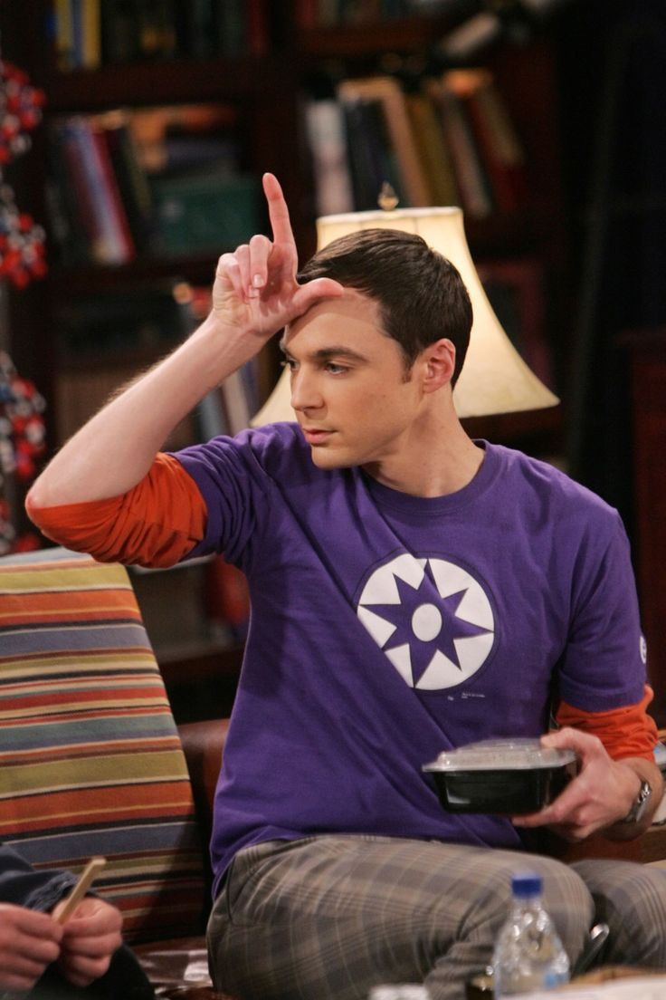

Biografia Sheldon Cooper

Sheldon Cooper, interpretado por Jim Parsons, é um físico teórico que trabalha no Instituto de Tecnologia da Califórnia (Caltech). Nascido em Galveston, Texas, Sheldon é um prodígio que obteve seu doutorado em física aos 16 anos. Ele é conhecido por sua inteligência extraordinária, sua falta de compreensão das normas sociais e seu comportamento peculiar, incluindo sua rigidez com rotinas e sua obsessão por detalhes. Apesar de ser arrogante e difícil de conviver, Sheldon é um amigo leal e desenvolve uma relação amorosa com Amy Farrah Fowler, com quem se casa e, mais tarde, conquista o Prêmio Nobel de Física. Apaixonado por ficção científica, trens e quadrinhos, ele é uma figura marcante e memorável da série.